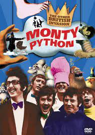

Начало создования Python
Задумка по реализации языка появилась в конце 1980-х годов, а разработка его реализации началась в 1989 году сотрудником голландского института CWI Гвидо ван Россумом. Для распределённой операционной системы Amoeba требовался расширяемый скриптовый язык, и Гвидо начал разрабатывать Python на досуге, позаимствовав некоторые наработки для языка ABC (Гвидо участвовал в разработке этого языка, ориентированного на обучение программированию). В феврале 1991 года Гвидо опубликовал исходный текст в группе новостей alt.sources. С самого начала Python проектировался как объектно-ориентированный язык.

Почему Python?
Гвидо ван Россум назвал язык в честь популярного британского комедийного телешоу 1970-х «Летающий цирк Монти Пайтона», поскольку автор был поклонником этого телешоу, как и многие другие разработчики того времени, а в самом шоу прослеживалась некая параллель с миром компьютерной техники.
1 версия Python
3 декабря 2008 года[53], после длительного тестирования, вышла первая версия Python 3000 (или Python 3.0, также используется сокращение Py3k). В Python 3000 устранены многие недостатки архитектуры с максимально возможным (но не полным) сохранением совместимости со старыми версиями Python.
Сравнения Python с другими язиками
В Java и Python все объекты создаются в куче, в то время как C++ позволяет создавать объекты как в куче, так и на стеке, в зависимости от используемого синтаксиса. На производительность также влияет способ доступа к данным в памяти. В C++ и Java доступ к данным происходит по постоянным смещениям в памяти, в то время как в Python — через хеш-таблицы. Использование указателей в C++ может быть довольно сложным для понимания среди новичков, и овладение навыками правильного использования указателей может занять некоторое время.
Python і Go
Если Python является полностью динамическим языком и практически любые элементы программы могут меняться во время исполнения, включая конструирование «на лету» новых типов и модификацию существующих, то Go — статический язык с достаточно ограниченными возможностями рефлексии, работающей только в отношении созданных при разработке типов данных. В некоторой мере заменой динамических возможностей в Go является кодогенерация, обеспечиваемая простотой синтаксиса и наличием необходимых инструментов и системных библиотек. Также в Go 1.18 добавили поддержку средств обобщённого программирований.